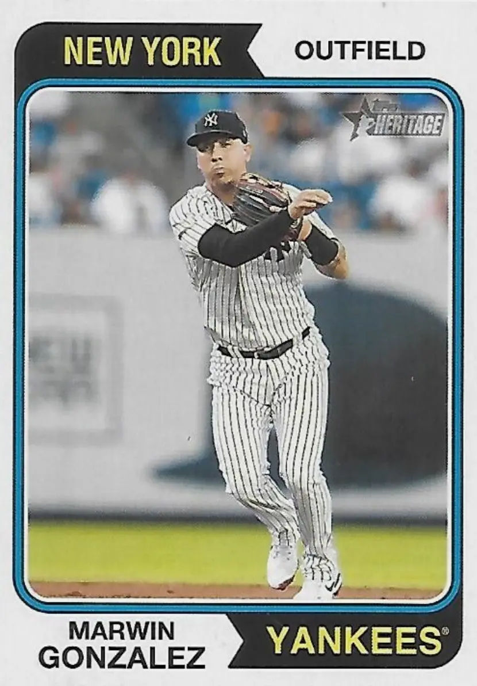

Marwin González
Career Highlights & Facts
(Facts are AI-generated and may require verification)
- Was the first player to start at five different positions in the first five games of a World Series.
- Hit the first grand slam in Houston Astros World Series history.
- Hit a home run for first career major league hit.
Would you like to find out more about Marwin González?
Career Totals
| WAR | AB | H | HR | BA | R | RBI | SB | OBP | SLG | OPS | OPS+ |
|---|---|---|---|---|---|---|---|---|---|---|---|
| 14.5 | 3526 | 888 | 107 | .252 | 420 | 415 | 44 | .310 | .399 | .709 | 94 |
Statistics via Baseball-Reference.com
The Original Clue